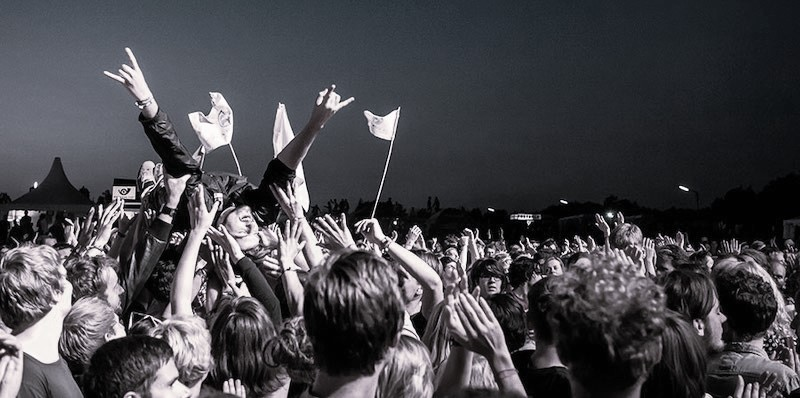

Il sito dedicato ai fandom di artisti rock, pop-punk e alternative
 All'interno di puoi trovare incontri organizzati per i fan di diversi artisti, in più città d'Italia. Come funziona?
All'interno di puoi trovare incontri organizzati per i fan di diversi artisti, in più città d'Italia. Come funziona?